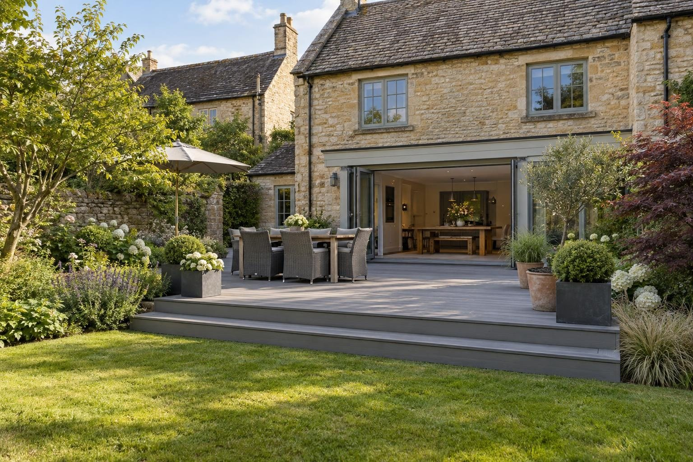

Composite & timber decking in Empingham
Decks for Empingham's generous plots, set to make the most of Rutland Water and open country, on ground we test near the North Brook.
In Empingham, composite decking typically costs £200–£250 per m² supplied and fitted, and softwood timber £110–£140 per m²; raised decks with balustrades and steps cost more. Because plots here are often large and face the water or open country, people tend to want bigger or higher decks, so the 30cm permitted development height and the half-garden rule are the first things we check.
- Composite, fitted
- £200–£250 per m²
- Planning
- Not needed under 30cm high
- Ground
- Limestone; wetter near the North Brook
- Guarantee
- 5 years, in writing
Our 2026 guide prices. Your fixed price comes in writing after the site visit. Full breakdown: composite & timber decking cost guide.
Composite & timber decking in Empingham
Empingham sits at the eastern end of Rutland Water, below the dam, and many of its gardens look out across the water or open country. That changes what people want from a deck. Rather than a small platform by the back door, the brief is often a generous area positioned to catch the view, sometimes set away from the house where the outlook is best, with steps, lighting and seating built in.
We build those decks the same careful way as any other: posts or pads on firm ground, a treated or aluminium sub-frame spaced for the boards, and a weed membrane and drainage underneath. Around the stone-built centre and the main street, a low softwood or muted composite deck sits more comfortably against old walls. On the later houses at the village edges, larger composite decks with picture-frame edges are more common.
What makes Empingham different
Empingham is on the limestone side of Rutland and much of the village drains reasonably well, which suits deck footings. The North Brook, a tributary of the Gwash, runs through the village, though, and ground near it stays wet. On those plots we dig to firm ground and keep the frame clear. A deck placed down the garden for the view may sit on lower, damper ground than the house, so we test there too. No Article 4 direction applies in the village conservation area.
A typical Empingham deck is a sizeable composite or softwood platform on a large rear garden, positioned towards the view, often with a step or two, built-in lighting and room for a table and chairs. Where the land falls, the far edge needs checking against the 30cm limit, and balustrades come in if the deck is raised.
Sources: Rutland conservation areas · Rutland flood risk strategy.
Permissions in Empingham
- PlanningDecking in a rear garden is normally permitted development if no part of it is more than 30cm above the ground and, with other outbuildings and platforms, it covers no more than half the garden. A raised deck over 30cm needs planning permission, and a listed house needs consent. Listed buildings and the Empingham conservation area have tighter rules, so we check your address before anything is designed. Planning Portal: decking
- TreesTrees in a conservation area need six weeks' notice before work, and protected trees need consent; both are free. Rutland County Council: tree works
- Design and priceWe measure up, check the ground and the planning position, and give you one fixed written price.
Rules checked October 2026.
What you get in Empingham
- Deck position planned around views of the water and open country
- Ground tested where the garden runs towards the North Brook
- Height checked at the far edge of larger decks
- Composite boards that will not rot, splinter or need staining, or pressure-treated softwood
- Frame built to the board maker's joist spacing, so boards do not bounce or bow
- Picture-frame edges, hidden fixings and LED step lights where you want them
The specification
- Ground levelled, weed membrane and drainage gravel laid
- Posts or pads on firm ground, set in concrete
- Treated softwood or aluminium sub-frame, braced and level
- Boards fixed to the manufacturer's spacing and fixings
- Edges, fascias, steps and lighting finished
- Five year workmanship guarantee in writing

Rated 5.0 from 37 Google reviews
“Had them round to do some decking at my grandparents house. Work was finished inc2 days as agreed, price was competitive and quality was good. Thanks again”
Lewis · Decking — Google review
“Lewis and his colleagues were very professional, friendly, hardworking and good value. They worked hard to get the job done efficiently, offered advice and were very knowledgeable. They even worked during the rain to complete our fence, decking and lawn. …”
Will · Fence, decking and lawn — Google review
Everything else we do here


Composite & timber decking in Empingham: questions
How much does a large deck cost in Empingham?
Can I build a big deck in Empingham without planning permission?
Can the deck go at the bottom of the garden for the view?
Can you add lighting for evenings by the water?
Composite & timber decking nearby
Request a site visit in Empingham
We measure up, check levels and drainage, and send a written proposal with the build-up, the programme and one whole price. No pressure and no follow-up sales calls.